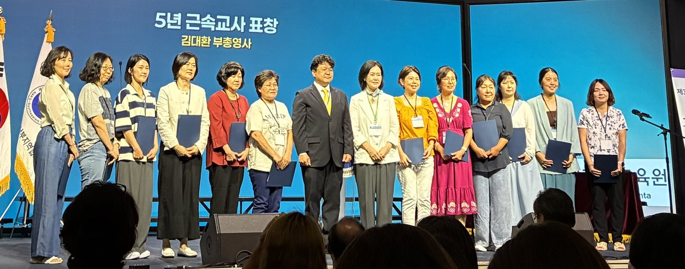

8월 1일, 우리 학교 이지숙 교감선생님과 조승연 선생님, 이선옥 선생님이 재미한국학교 동남부지역협의회가 주관한 제35회 동남부 교사연수회에 참석했습니다. 강의가 시작되기 전 열린 개회식에서는 반가운 시상식이 있었습니다. 조승연 선생님을 비롯한 동남부지역 14명의 교사가 5년 근속교사 표창을 수상하는 영예를 안았습니다. 김대환 주애틀랜타총영사관 부총영사가 직접 표창장을 수여하며 선생님들의 헌신과 노고에 감사의 마음을 전했습니다. 함께 오랜 시간 학생들을 위해 애써 오신 장유희 선생님은 최근 메릴랜드로 이주하여 이날 행사에는 참석하지 못했지만, 동료 교사들이 그 기쁨을 함께 나누며 표창을 대신 받아오는 따뜻한 순간도 있었습니다.

이번 연수회의 주제강의는 케네소주립대학교 안소현 교수가 맡아 「차세대 학생들을 위한 세계시민교육: 아시안 아메리칸 역사 속 연대와 성찰」이라는 주제로 진행했습니다. 안 교수는 "나를 알고 나의 뿌리를 이해하는 것이 타인을 존중하는 일의 시작"이라고 강조하며, 미주 한인의 역사를 단편적으로 바라보는 것이 아니라 '아시안 아메리칸'이라는 더 큰 역사적 맥락 속에서 이해해야 한다고 설명했습니다. 자신의 정체성을 바르게 이해할 때 비로소 다른 문화와 사람을 존중하는 진정한 세계시민으로 성장할 수 있다는 메시지는 참석한 교사들에게 깊은 울림을 전했습니다.
주제강의에 이어 진행된 분반강의에서는 교사들이 각자의 담당 학급에 맞는 다양한 교수법을 배우며 실제 수업에 적용할 수 있는 아이디어를 나누었습니다.
1교시에는 벧엘한국학교 박진희 선생님의 「그림책, 한글 수업의 비밀무기: 그림책으로 만드는 다양한 한글 수업 활동」 강의가 진행되어 그림책을 활용한 창의적인 한글 교육 방법을 소개했습니다. 이어 애틀랜타한국학교 김희진 교사는 「국악동요와 전래동요를 활용한 계절에 맞는 노래놀이」를 주제로 우리 전통 노래를 활용한 즐거운 수업 운영 방법을 나누었습니다.
점심 식사 후 이어진 2교시에서는 학생들의 수준에 맞춘 레벨별 수업지도법이 심도 있게 다루어졌습니다. 입문·기초·브리지반에서는 슈가로프한국학교 정혜주 교감선생님의 「한글 첫걸음 지도법」 강의가 진행되었으며, 초급반에서는 성김대건한국학교 이경숙 교사가 「말이 살아나는 신나는 한글 문법」을 통해 학생들이 자연스럽게 문법을 익히고 말하기 능력을 키울 수 있는 다양한 교수법을 소개했습니다.
중고급반에서는 애틀랜타한국학교 최문정 교사가 「말하는 한국어를 넘어 생각하고 표현하는 한국어: 코리언 아메리칸 청소년의 언어능력과 문화 정체성 개발」을 주제로 강의를 진행했습니다. 한국어를 단순한 의사소통의 도구가 아니라 자신의 생각과 정체성을 표현하는 언어로 발전시키기 위한 교육 방향을 제시하며, 오늘날 많은 코리언 아메리칸 청소년들이 고민하는 언어와 문화 정체성에 대해 참석한 교사들과 함께 깊이 있는 의견을 나누는 의미 있는 시간이 되었습니다.
하루 동안 이어진 연수는 새로운 교수법을 배우는 시간을 넘어, 같은 길을 걷는 교사들이 서로의 경험을 나누고 격려하며 다시 교육 현장으로 나아갈 힘을 얻는 소중한 시간이었습니다.
이제 곧 기다리던 가을학기가 시작됩니다. 애틀랜타 교사연수를 통해 새로운 배움과 도전을 가득 안고 돌아오신 선생님들께서 설레는 마음으로 학생들과 학부모님들을 기다리고 계십니다. 이번 연수에서 얻은 다양한 교육 방법과 따뜻한 나눔이 올 한 학기 교실 곳곳에 자연스럽게 스며들어, 우리 학생들이 더욱 즐겁게 배우고 자신 있게 성장하는 밑거름이 되기를 기대합니다.
올가을에도 북알라바마한국학교에서 함께 배우고, 함께 성장하는 소중한 시간을 만들어 가겠습니다.